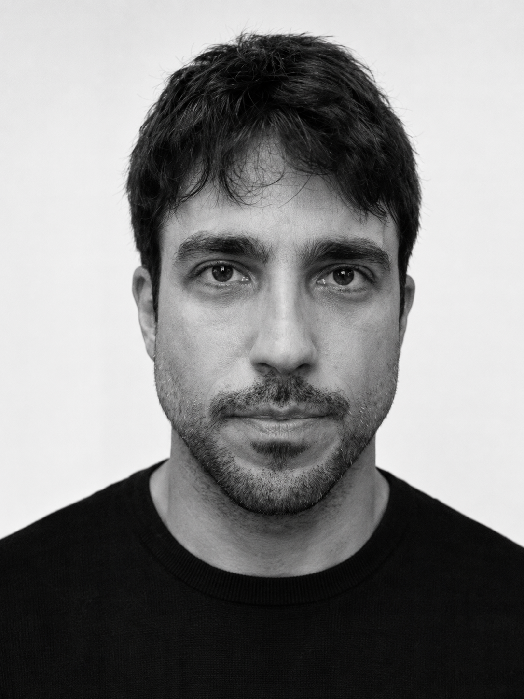
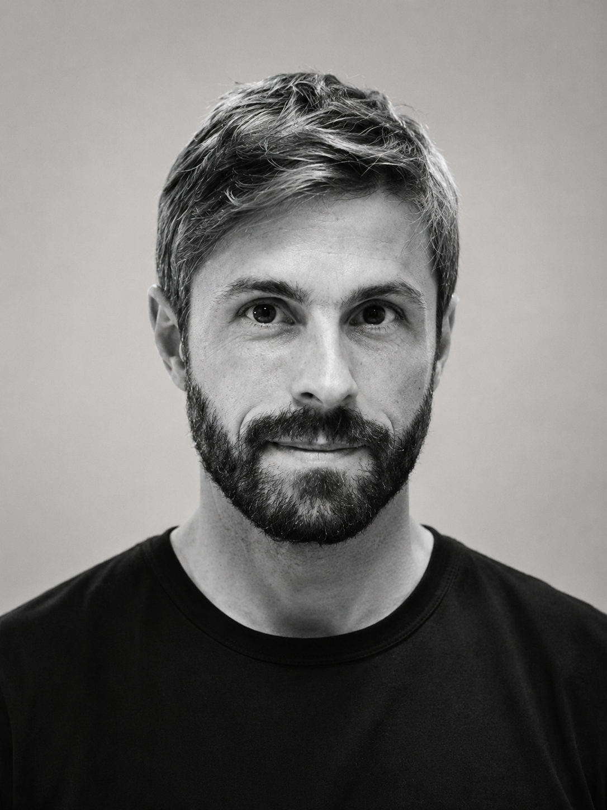
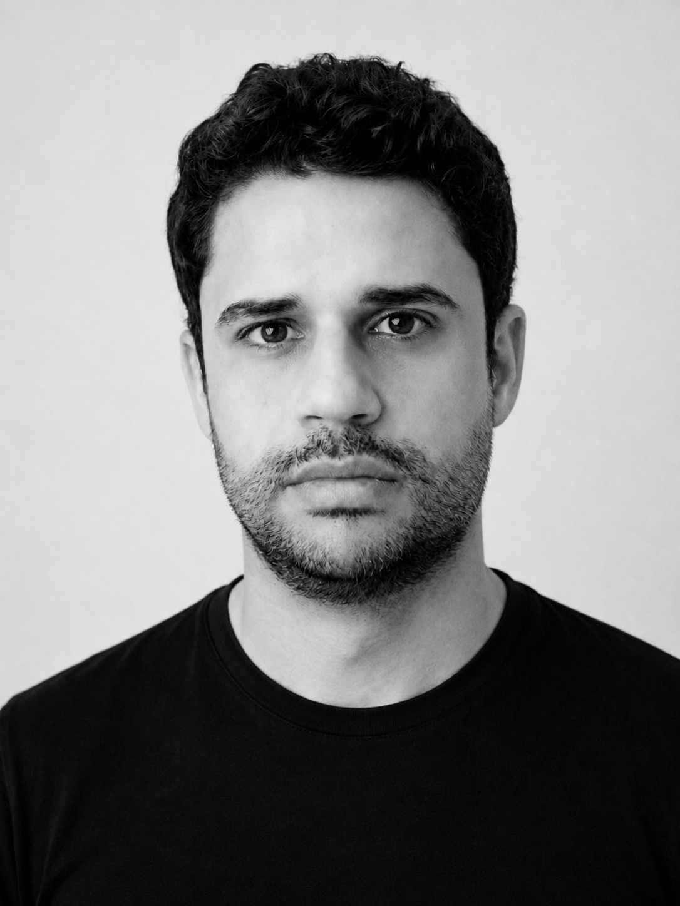

Personalização alta
R$ 1,5k–6k/mês
Agenda e baixa disponibilidadeSessões episódicasBarreira financeira
CareerFlow AI transforma experiência acumulada em direção estratégica — com diagnóstico profundo, inteligência de mercado e mentoria contínua.
A IA acelera a perda de valor de competências que antes sustentavam uma carreira inteira. O TCC nomeia esse fenômeno de Erosão da Relevância.
Entre execução técnica e liderança, o sênior vê caminhos demais — e clareza de menos. Compra cursos, otimiza o LinkedIn por intuição e sente que está apenas “enxugando gelo”.
Trajetória consolidada, alto custo de oportunidade e uma encruzilhada entre especialização e liderança.
Cruza rastro digital, assessment proprietário e tendências de mercado para produzir um “Raio-X” realista.
Traduz competências entre setores e torna visível o valor silencioso acumulado pelo profissional.
Conversa via WhatsApp, guarda memória dos objetivos e ajuda antes de decisões e reuniões críticas.
Governança, resiliência, escala, gestão de risco e decisões em ambientes regulados.
A mesma lógica aplicada onde a competência é mais escassa — e, portanto, potencialmente mais valiosa.
CareerFlow Pro: mentor, diário e diagnóstico contínuo. Deep Research + B2B: relatórios avulsos e licenças white-label para retenção de lideranças.
Freemium abre o funil; assinatura e pay-per-use monetizam; white-label amplia o mercado.
Entrevistas e teste da hipótese central com profissionais de tecnologia.
Experiência responsiva e jornada conversacional colocadas em teste.
Modelo de negócio, premissas e viabilidade financeira estruturados.
Web App e WhatsApp integrados para validar retenção e disposição a pagar.
O LTV cresce 4,7× em três anos. A queda do churn pesa mais que o aumento de preço — por isso, retenção é o KPI central.
Dois anos de investimento constroem base e produto. A operação vira positiva no Ano 3, com margem EBITDA de 1,8%.
Se ficar em 4%, LTV/CAC cai de 9,98× para 6,24× — ainda saudável, mas com menos folga.
R$ 50 mil de custo adicional no Ano 3 devolvem a operação ao vermelho.
A queda de COGS de 38% para 24% depende de eficiência de modelo ainda não medida em produção.
13,6 meses no Ano 1 tornam a rodada seed do Ano 2 parte necessária do plano.
Testar diretamente a dor, a segmentação da persona e a disposição a pagar R$ 97/mês.
Se a coorte piloto não sustentar esse patamar, a premissa de churn deve ser refeita antes da captação.




Uma inteligência de carreira que revela valor, reduz ruído e acompanha cada decisão — do diagnóstico ao próximo cargo.